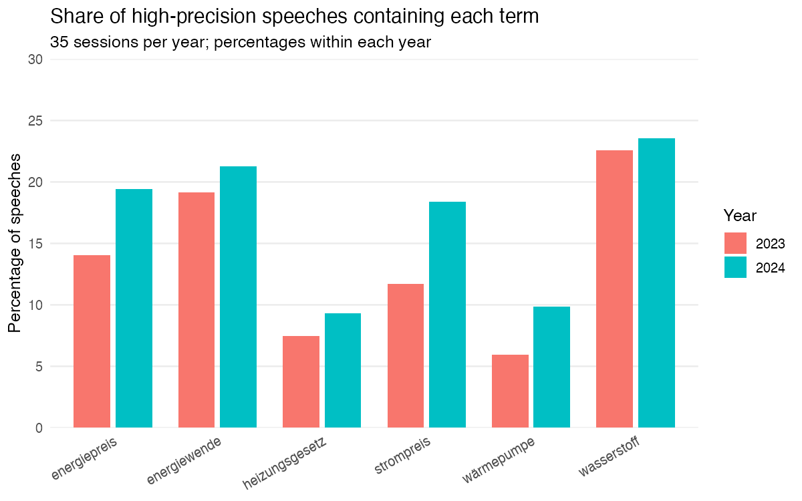

While working at CAIS, a colleague asked whether it would be possible to take official government documents, extract the main topics, and analyse how they were discussed. This project applies that idea to the energy transition: using public Bundestag protocols to track what was said, by whom, and how the framing changed between 2023 and 2024.
This project examines how the energy transition has been discussed in the German Bundestag. Using natural language processing on plenary debate transcripts, it tracks changes in topical emphasis and party-specific framing between 2023 and 2024.
The work is a small, fully reproducible computational social science study designed for a research portfolio and PhD applications.
How have topics, concerns and arguments surrounding the energy transition been discussed in German parliamentary debates, and how have these discussions changed between 2023 and 2024?
Results are reported as the percentage of high-precision speeches containing each term (35 sessions per year). High-precision corpus: 470 speeches (2023), 386 speeches (2024).

| Term | 2023 | 2024 |
|---|---|---|
| Wasserstoff | 22.6 % | 23.6 % |
| Heizungsgesetz | 7.45 % | 9.33 % |
| Strompreis | 11.7 % | 18.4 % |
| Energiepreis | 14.0 % | 19.4 % |
| Energiewende | 19.1 % | 21.2 % |
| Wärmepumpe | 5.96 % | 9.84 % |
Party framing: Opposition parties (CDU/CSU, AfD) used sharper failure and repeal language. Government parties (SPD, Greens) emphasised external price shocks and crisis management. The same policy objects were discussed; the evaluative frames diverged.
Negative-cue rates in 2024: AfD 84.4 %, CDU/CSU 63.4 %, FDP 60.6 %, SPD 53.3 %, Greens 37.7 %.
Negative-cue rates in 2024: AfD 84 %, CDU/CSU 63 %, FDP 61 %, SPD 53 %, Greens 38 %.
Heizungsgesetz – CDU/CSU 2024
“…dieses unsägliche Heizungsgesetz, wahrscheinlich der größte Bürokratiezubau der letzten 20 Jahre…”
“…this dreadful Heating Act, probably the biggest increase in bureaucracy of the last 20 years…”
Heizungsgesetz – AfD 2024
“…das Heizungsgesetz ohne Rücksicht auf Verluste durch den Bundestag gepeitscht…”
“…the Heating Act was rammed through the Bundestag without regard for the consequences…”
Energiepreis – SPD 2024
“…sind die Energiepreise auch durch das beherzte Eingreifen der Ampelkoalition wieder deutlich gesunken.”
“…energy prices have fallen significantly again, also thanks to the decisive intervention of the coalition.”
Energiepreis – Greens 2024
“…die Energiepreise wieder auf das Niveau von vor dem von Putin gestarteten Energiepreisangriff… zu senken.”
“…to bring energy prices back down to the level before Putin’s energy-price attack…”
It demonstrates the ability to formulate a focused research question, build a reproducible pipeline from public sources, critically assess computational results against actual speech content, and report findings with claim strength matched to the evidence.